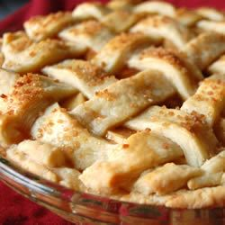

No Sugar Apple Pie

Description
Recipe by Allrecipes Member
This sweet, tart apple pie contains no added sugar, for a wholesome take on a classic dessert.
Ingredients
2- 9 inch pie shells
3 tbl cornstarch
1 tbl ground cinnamon
12 floz. can unsweetened apple juice concentrate, thawed
6 cups green apples, sliced
Steps
- Preheat oven to 350 degrees F (175 degrees C).
- In a small bowl whisk together cornstarch, cinnamon, and 1/3 cup of the apple juice concentrate. Set aside.
- In a large saucepan simmer apples with remaining apple juice concentrate until apples are tender, about 10 minutes. Stir in cornstarch mixture and continue to simmer until thickened. Remove from heat.
- Spoon apple mixture into pastry-lined pie plate. Cover with top crust. Seal and flute edges. Cut steam vents in top.
- Bake in preheated oven for 45 minutes, or until crust is golden brown.
Original recipe found here.
Return to homepage